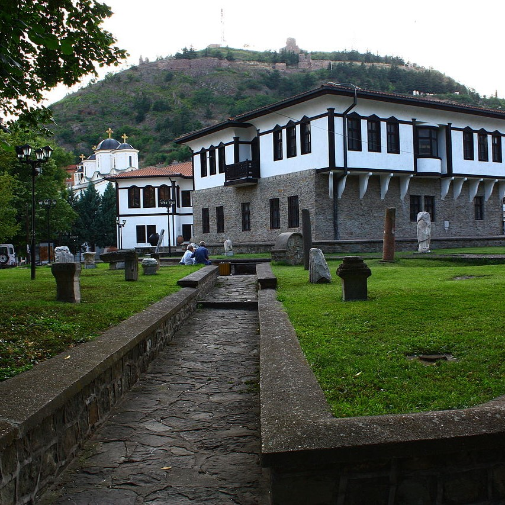
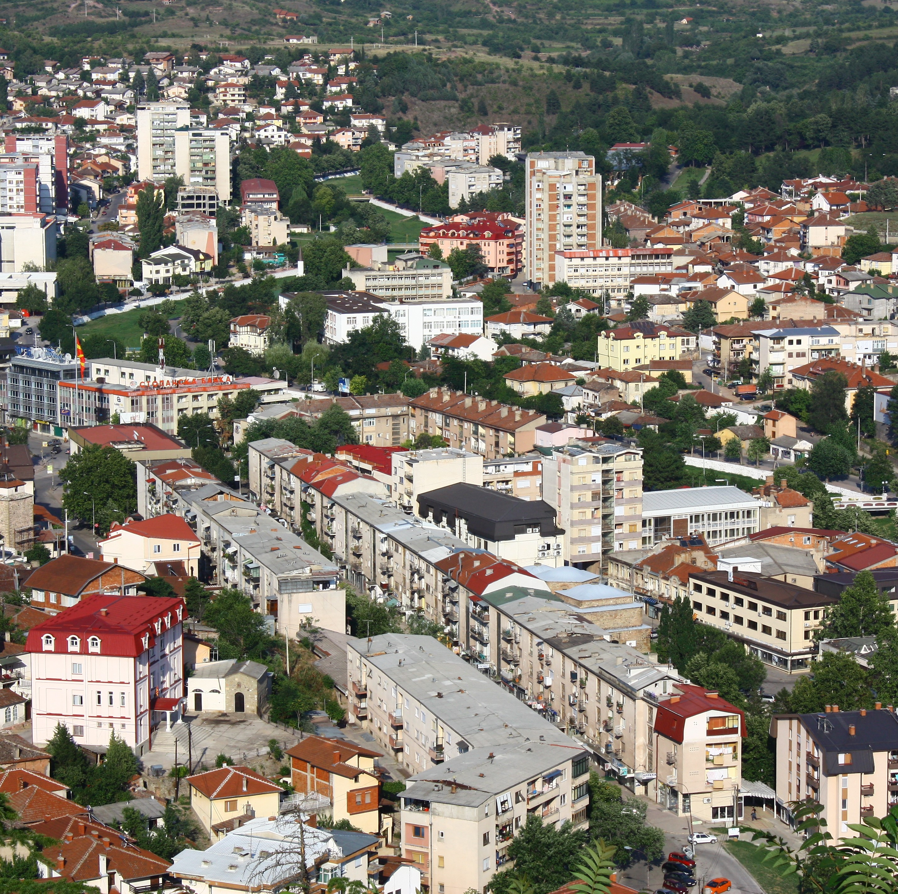
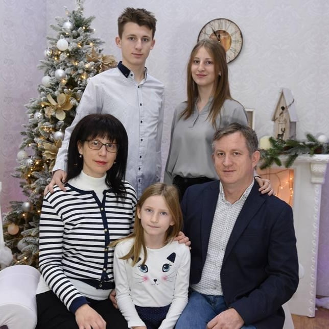
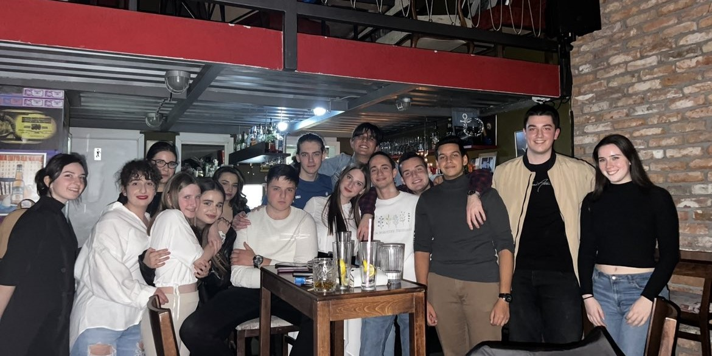
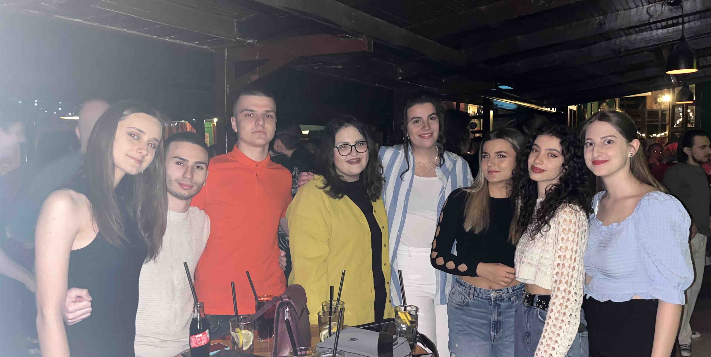

Hello, my name is
I am a student at the Faculty of Computer Science and Engineering, currently completing my first year of studies. Passionate about technology, I eagerly embrace the challenges and opportunities that lie ahead, driven to excel in this dynamic field of knowledge.
I hail from Štip, Macedonia, my beloved hometown where I was both born and raised. Štip holds a special place in my heart, cherished for its rich culture, delightful cuisine, and the nostalgic memories of my childhood.
The vibrant cultural heritage of Štip is evident in its festivals, traditional music, and captivating folklore. The local cuisine tantalizes the taste buds with mouthwatering dishes, blending flavors that reflect the region's history and traditions.
Štip is an unforgettable place for me, shaped by cherished memories of childhood, laughter, and community warmth. The sense of belonging, strong bonds, and shared experiences shape me into the person I am today.
The closest individuals in my life are undoubtedly my family and the friends I have encountered throughout the years. They have been pillars of support, love, and companionship, shaping my journey and making life more meaningful.
My family is composed of five members, including my older brother, younger sister, and our loving parents. I find solace in knowing that I can always rely on them for support, guidance, and unwavering love throughout life's journey.
My friends hold a special place in my heart, as they have transformed Skopje into my second home. Through countless shared experiences, laughter, and unconditional support, they have created a sense of belonging and familiarity in the city.
 Hiking, skiing, solving puzzles, and spending quality time with my loved ones are my cherished hobbies. The thrill of exploring nature's beauty through hiking and skiing invigorates my spirit, providing a sense of adventure and tranquility. Solving puzzles challenges my mind, stimulating problem-solving skills and fostering a sense of accomplishment. However, nothing brings me greater joy than sharing moments with my loved ones. Whether it's engaging in deep conversations, enjoying shared activities, or simply being in their presence, these moments create lasting memories and strengthen the bonds that enrich my life.